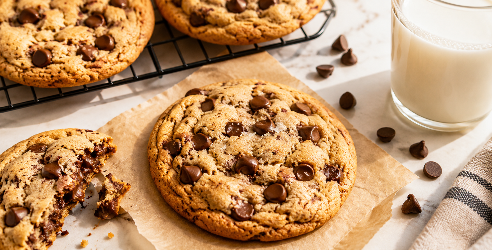

🍪 Chocolate Chip Cookies

Chocolate Chip Cookies are golden on the outside, soft and chewy on the inside, and packed with delicious chocolate chips. They're one of the world's most popular homemade treats and are perfect for snacks, parties, or enjoying with a glass of milk.
🥣 Ingredients
- 1 and a 1/2 cups flour
- 1/2 tsp baking soda
- 1/4 tsp salt
- 1/2 cup butter (softened)
- 1/2 cup brown sugar
- 1/4 cup white sugar
- 1 egg
- 1 tsp vanilla extract
- 1 cup chocolate chips
📋 Recipe Information
⏱ Preparation time
|
🍽 Serves
|
⭐ Difficulty
|
30 mins |
12 cookies |
Easy |
👨🍳 Instructions
- Preheat the oven to 180°C (350°F).
- Mix the butter, brown sugar, and white sugar until creamy.
- Beat in the egg and vanilla extract.
- Add the flour, baking soda, and salt.
- Fold in the chocolate chips.
- Scoop small portions of dough onto a baking tray.
- Bake for 10 to 12 minutes until the edges turn golden.
- Let the cookies cool for a few minutes before serving.
💡 Tip
Don't overbake the cookies. They continue cooking slightly after coming out of the oven, keeping the center soft and chewy.
🍽 Best served with
- Glass of Milk 🥛
- Vanilla Ice Cream 🍨
- Hot Coffee ☕
- Hot Chocolate 🍫
⬅ Back to Recipe Journal